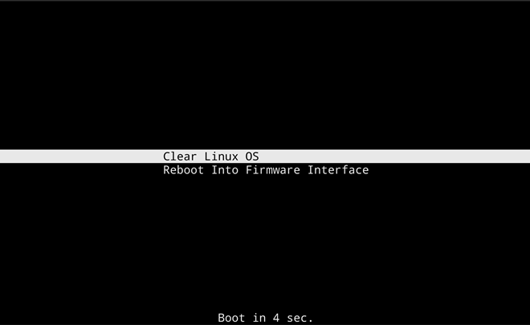

Fix a broken installation
This guide explains how to fix a broken installation of Clear Linux* OS using a live desktop image on a USB.
Overview
This guide assumes you have installed Clear Linux OS on a target system, but the OS does not boot or function properly.
The process described in this guide can only verify and fix files that
swupd owns in /usr. Files outside of this path, such
as /home/, /etc, /var, etc., cannot be repaired by this
process.
Prerequisites
- Download and install the live desktop image on a USB. See Install Clear Linux* OS from the live desktop for install instructions.
Boot a live desktop image to fix target system
- Boot the Clear Linux OS live desktop image.
Install from live image
After you download and burn the live desktop image on a USB drive, follow these steps.
Insert the USB drive into an available USB slot.
Power on the system.
Open the system BIOS setup menu by pressing the F2 key. Your BIOS setup menu entry point may vary.
In the setup menu, enable the UEFI boot and set the USB drive as the first option in the device boot order.
Save these settings, e.g. F10, and exit.
Reboot the target system.
Select Clear Linux OS in the boot menu, shown in Figure 1.
Figure 1: Clear Linux OS in boot menu
{kind=link}
Mount root partition, verify, and fix
Open a Terminal window.
Ensure the system is connected to the network.
Mount the system’s root partition.
To find the root partition, run:
lsblk
We’ll use
/dev/sda3/as the root partition example.Next, mount the partition to the
/mntfolder.sudo mount /dev/sda3 /mnt
Verify that you mounted the correct root partition by checking for some files commonly found on Clear Linux OS systems.
cat /mnt/usr/lib/os-release ls /mnt/usr/share/clear/bundles
Next, run swupd to fix any issues on the target system.
sudo swupd repair --picky --path=/mntAfter the process is complete, unmount the root partition:
sudo umount /mnt
Reboot the system, remove the live desktop USB drive, and boot into the repaired system.
sudo reboot
Congratulations! You successfully restored Clear Linux OS.